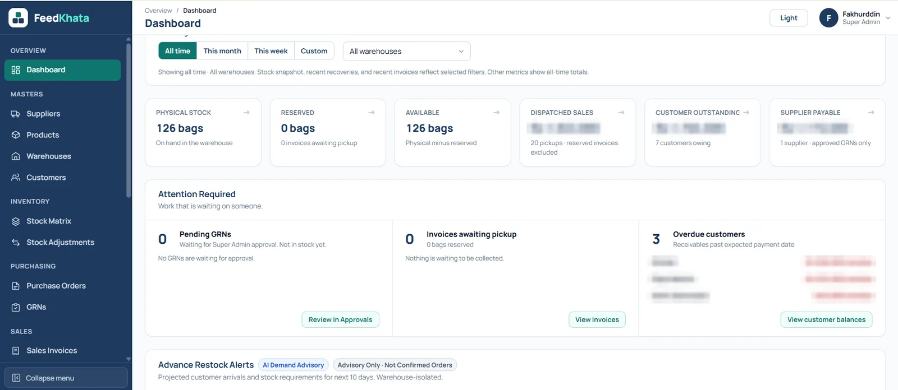
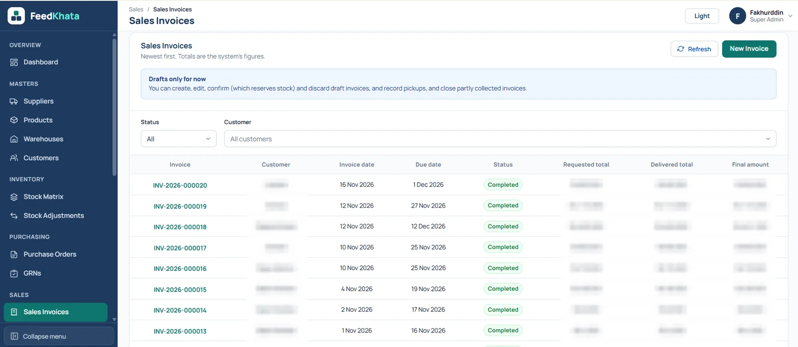
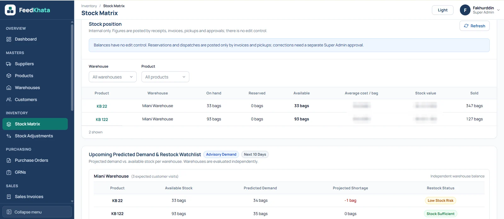
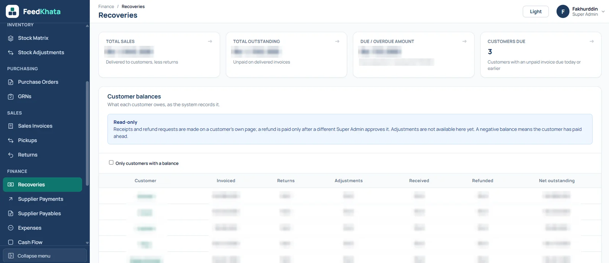
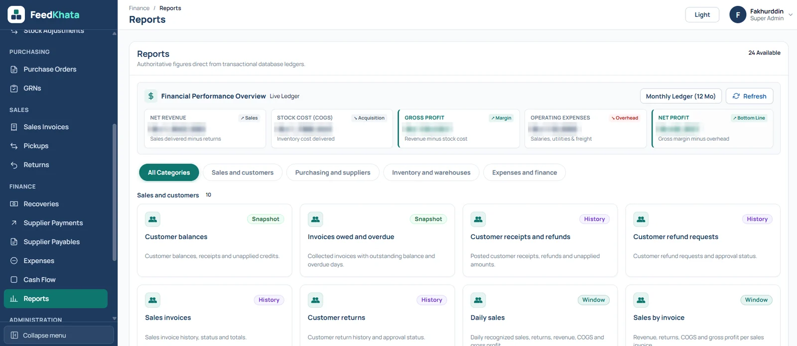

FeedKhata
Feed trading runs on credit, many warehouses and daily stock movement. FeedKhata keeps stock, sales, payments and demand forecasts in one place.

Overview
The problem
A feed trader keeps bags in several warehouses, sells on credit and gets paid later. Stock, sales, payments and approvals must match every day, and one mistake throws off the books.
The solution
One system covers everything from purchase to payment. It holds stock for each invoice, sends every sensitive change for approval and shows what each customer is likely to buy next.
My role
I defined the business rules, planned the workflows and data model, and built the system with AI-assisted development, all the way to daily use.
Before and after
What changed for each group of people who use it.
Owner
Stock, money owed and profit sat in separate records, so there was no single, up-to-date view of the business.
A dashboard with stock, sales, money owed and payable, and every sensitive change waiting for approval.
Sales and warehouse staff
Stock promised to one customer could be sold to another.
Confirming an invoice reserves the bags, and pickups and returns are recorded against it.
Accounts
Receipts, supplier payments and expenses were tracked apart from sales and stock.
Customer and supplier balances are calculated from the documents, and overdue customers are flagged.
What it does
Purchasing
Purchase orders and goods received notes. Stock is added only after approval.
Inventory
Stock per warehouse and product, with average cost and every movement recorded.
Sales and pickups
Invoices reserve stock until it is collected, and customers can pick up in parts.
Finance
Receipts, supplier payments, expenses, balances and month-end closing.
Approvals
Returns, stock adjustments and goods receipts need the owner’s approval, and the reason is saved.
Reports
24 reports built from live data: sales, customers, suppliers, stock, expenses and profit.
How it works
Demand forecasting
AI can explain a forecast in plain words, but it never changes the numbers.
How it was built
01Research
Studied how the business buys, stores and sells feed, and where stock and money get out of sync.
02Rules
Set the rules for approvals, credit, returns, costing and month-end closing.
03Workflows and data
Planned each document from draft to approved, and a data model that keeps stock and balances correct.
04Build and test
Built it with AI-assisted development and tested the main flows with automated browser tests before daily use.
Screens





Key decisions
Stock that stays right
Each invoice reserves its bags in one step, so two sales can never take the same stock.
Correct, never edit
Finished invoices, receipts and stock moves are never changed. A mistake is fixed with a new, approved document.
AI advises, never decides
Forecasts come from clear statistics with their accuracy tracked. AI only explains them in plain words.
Tech stack
Where it is now
Today
In daily use by a feed-trading business since October 2026, covering purchasing, stock, sales, payments and reports.
What's next
Keep improving forecasts as new sales come in, and prepare the system to serve more than one business.
How success is measured
Books that balance every day, stock that matches the warehouse, and forecast accuracy for each product.
© 2026 Fakhurddin J. · All rights reserved.Designed & built by me